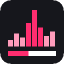

ScrubberPeople have been typing timestamps into YouTube comments for over a decade — then burying them under a thousand other comments. Scrubber reads them off the page and draws them where they belong: on the progress bar.
chrome://extensions — or edge://extensions,
brave://extensions.Hand-loaded extensions don't auto-update, and Chrome re-asks about developer mode on every launch. The store version is the quiet one.
Safari has no "load unpacked" — every extension ships inside a native app, so this one has to be built. You need macOS with Xcode installed, not just the command line tools.
git clone https://github.com/alex-mind/scrubber./build.sh safari-app — it converts the extension to an
Xcode project, builds it, and installs Scrubber.app to
/Applications.If it doesn't appear in the list, quit Safari completely and reopen it — Safari reads its extension list once per launch. Without a paid Apple developer account the build is unsigned, and Safari then needs Develop → Allow unsigned extensions ticked again after every restart.
A real density profile: taller, brighter marks mean more people stopped to say something about that moment. Hover to scrub.
Where people stopped to comment is where something happened. You can read that off the bar before you watch a second.
As you watch, the best-liked comment about the moment you're in appears, then gets out of the way. One per burst, spaced out.
On tutorials, roughly one comment in eight carries a timestamp, and they cluster hard on the parts people got stuck at.
Reply, like, or write a comment stamped with the moment you're at — it posts to YouTube normally, so it auto-links for everyone.
A YouTube extension that reads comments deserves suspicion. So, precisely:
storage, for those settings.| Browser | Status |
|---|---|
| Chrome, Brave, Arc, Opera | Supported |
| Edge | Supported |
| Safari | Works, but shipping it needs a $99/yr Apple developer account |
| Firefox | Not yet |